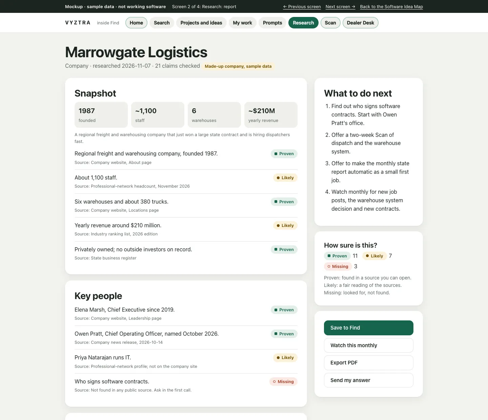
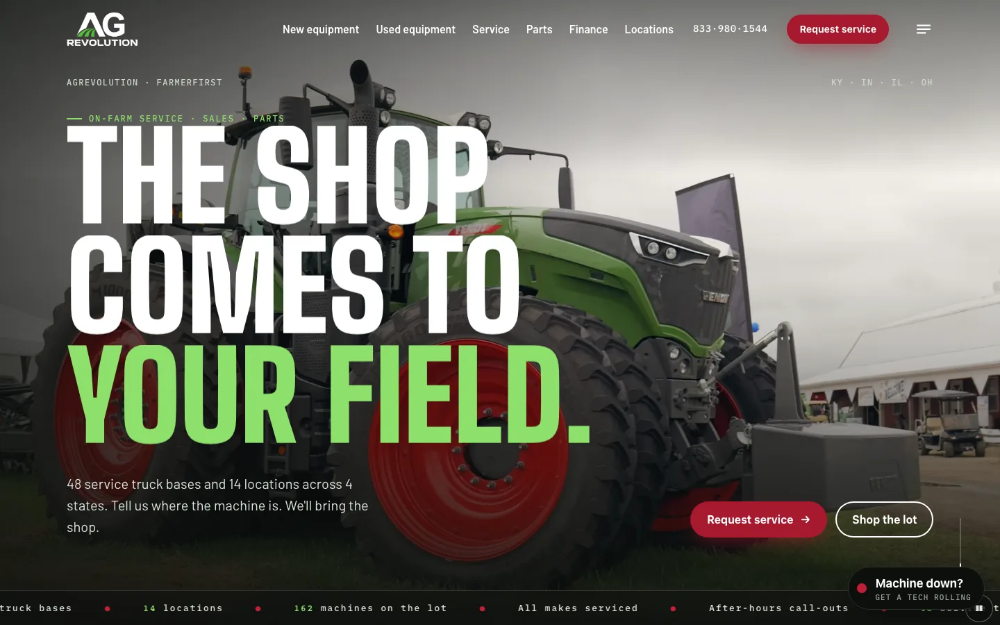
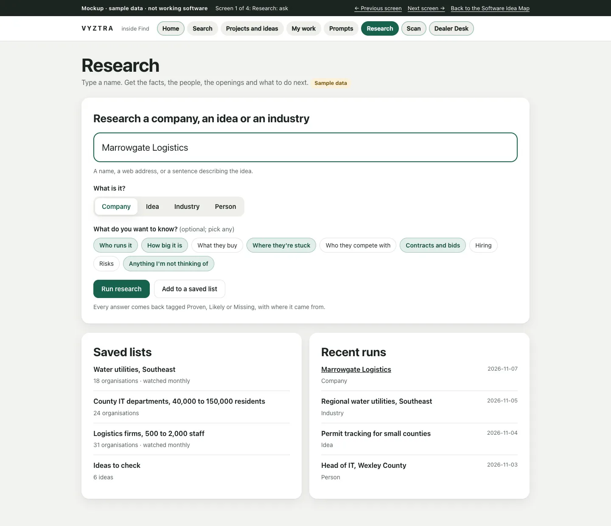
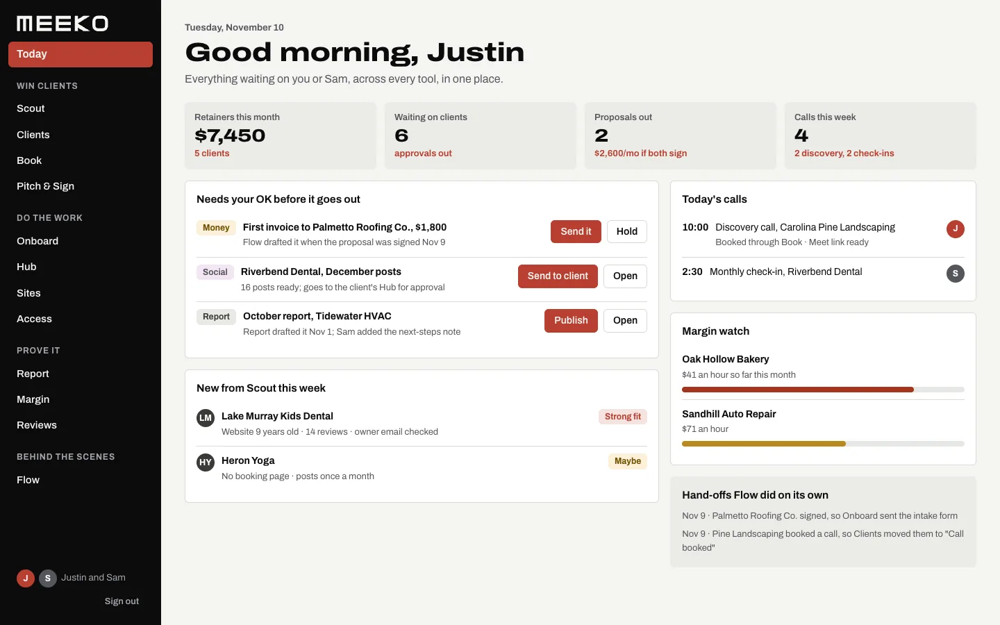
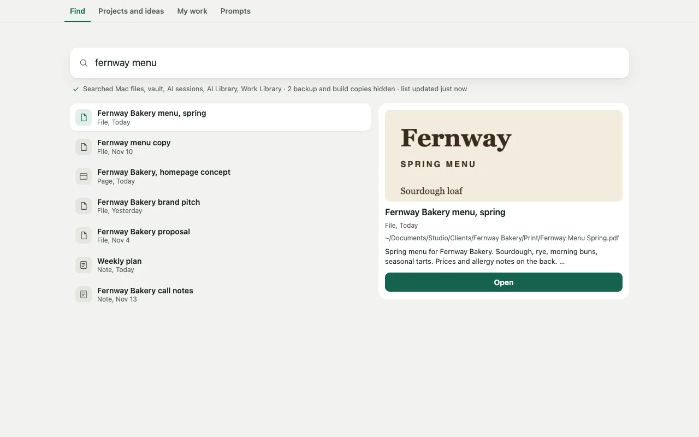
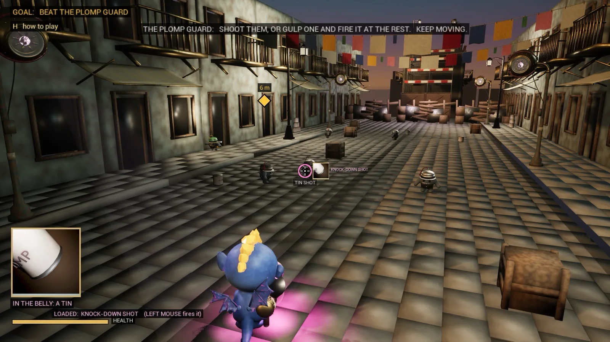

I design AI-enabled tools and products, from the first research question to screens people can click. I measure before I design, show mockups before anything gets built, send my own work to hostile reviewers, and label what's proven and what isn't.


Prototype v4A farm-equipment dealer's site rebuilt around its service trucks. 499 pages crawled, 353 dealer sites checked, three hostile reviews. Phone speed score 94 on the October build; the v4 re-run scored 86, then 100 after fixes, on a local server, so best case.
Read the case study →
Sample dataEvery claim is labelled Proven, Likely or Missing, and Proven has to survive a second read. A feature that failed its own back-test was cut.
Read the case study →
Design, sample dataA two-person agency's recurring jobs, priced build against buy, folded into 12 tools behind one login. Clients never sign in. Anything touching money waits for a person.
Read the case study →
Demo listBuilt because I kept losing my own work. It says what it searched and what it didn't, and it has a pass bar I set before the build. It hasn't passed yet.
Read the case study →
Gameplay captureA game jam entry. Every scripted test passed, and I was still lost each time I played. Each playtest rewrote how the game teaches itself.
Read the case study →Crawl it, time it, count the taps, read the evidence, then design. The dealer site started with 499 crawled pages and 16 speed tests on the live site.
Every idea gets static mockups or a visual plan, and a yes, before anything gets built. Find's plan was laid out visually first, and built only after my “Looks right, build Find”.
Finished work goes to hostile reviewers first: AI review panels, back-tests against cases I already know the answer to, and my own playtests written down word for word.
Every case study says what it can prove and what it can't yet, and leaves the empty slot visible until there's evidence to fill it.
Case studies, each with a "not proven yet" box.
Playtests of my own game, my words kept verbatim.
Layout checks passed on the research tool mockups, 0 failed.
Scripted checks passed on the packaged game. They still missed what I found by playing.